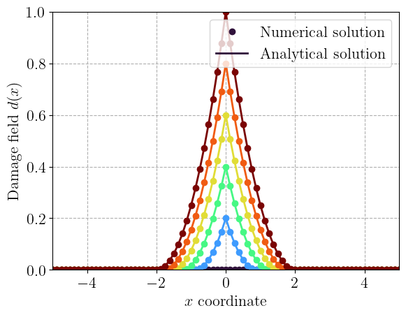
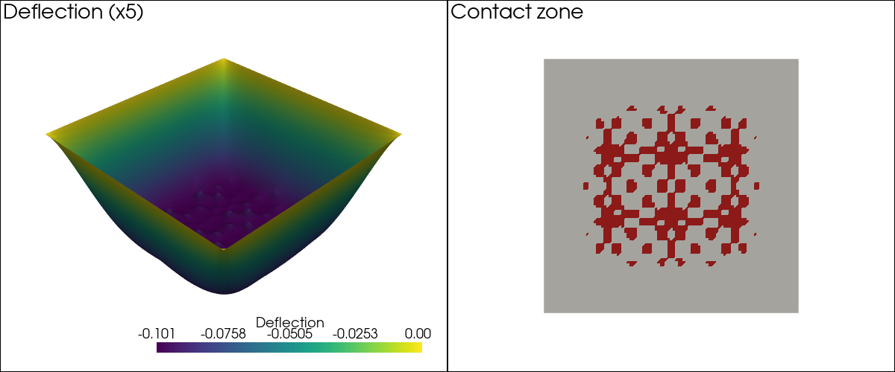
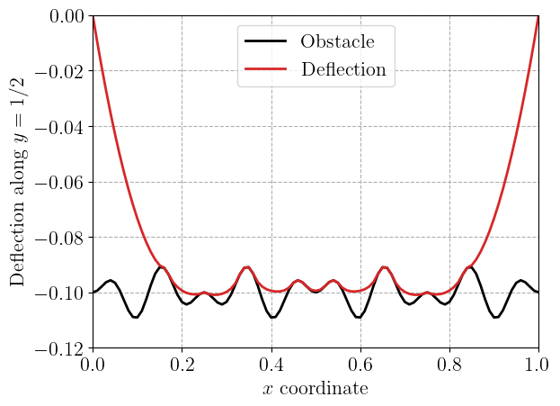

Bound-constrained problems: localized damage and obstacle problem #
Objectives
This demo shows how to solve bound-constrained PDE optimization problems using the PETSc TAO solver. As an alternative, we also show how to solve them as variational inequalities using the PETSc SNES solver. The application examples involve the computation of localized solutions in the phase-field/damage gradient approach to brittle fracture and the classical obstacle problem of an elastic membrane.
\(\newcommand{\dOm}{\,\text{d}\Omega}\)
Download sources
Introduction#
Bound-constrained problems involve finding the optimal solution of optimization problems of the form:
where \(f(x)\) is the objective function to minimize and \(x_l, x_u\) are known lower and upper bounds set on the optimization vector \(x\).
There exist many methods to solve such a constrained optimization problem. It is important to note that constraints are here very simple as they bound only the minimum and maximum values of the optimization variable \(x\). In particular, this setting does not allow for more general linear or non-linear equality or inequality constraints.
Optimization solvers: PETSc TAO#
PETSc’s Toolkit for Advanced Optimization (TAO) offers a wide range of algorithms to solve various constrained or unconstrained optimization problems, including bound-constrained problems. To interact with such a solver, the user is required to provide the objective function and the bounds. Depending on the chosen algorithm, the user should also provide:
the objective gradient \(\nabla f(x)\);
the Hessian operator \(\nabla^2 f(x)\).
In the following, we will use a bounded Newton method with line search, which requires the objective, its gradient and its Hessian.
Variational inequality solvers: PETSc SNES#
When \(f\) is convex and differentiable, a solution \(x\) of (28) is characterized by the following optimality conditions, written for each component \(i\):
This complementarity problem is the discrete version of a variational inequality (VI). Such problems can be solved with the variational inequality solvers of PETSc’s nonlinear solver SNES, such as active set (vinewtonrsls) or semi-smooth (vinewtonssls) Newton methods. Contrary to TAO, they only require the residual \(F(x) = \nabla f(x)\) and its Jacobian, but not the objective function itself. As a result, they can also be used to solve VIs which do not derive from the minimization of an objective function. Since SNES is the nonlinear solver used by dolfinx’s NonlinearProblem, using VI solvers simply amounts to choosing the solver type and setting the bounds.
Localized 1D solutions in phase-field fracture#
Problem position#
We consider a simple 1D bound-constrained problem which arises from the use of phase-field or damage gradient models of brittle fracture [Bourdin et al., 2000, Pham et al., 2011]. In such methods, we simulate the propagation of cracks by minimizing a total energy consisting of an elastic and a fracture energy. When using one of the classical models of the phase-field approach, namely the \(\text{AT1}\) model, the fracture energy is written as:
where \(d\) is a damage-like variable (with values in \([0;1]\)) which smears the discrete crack representation (corresponding to \(d=1\)) over a regularization length \(\ell_0\). \(G_\text{c}\) represents the material fracture energy.
During the solution process, the damage field is found by minimizing the total energy for a fixed displacement field and subject to bound constraints \(d_n \leq d \leq 1\) where \(d_n\) denotes the damage field at the previous time step which is used to enforce the irreversible evolution of damage.
When subject to a given mechanical loading, the damage field will tend to localize spatially, corresponding to a smeared crack representation. In the 1D setting, it is possible to characterize the shape of the localized solution by finding damage fields which minimize the fracture energy (30).
More precisely, we consider a 1D domain \(\Omega=[-L;L]\) of length \(2L\) and we look for a minimizer \(d(x)\) of:
where we ignored the factor \(3G_\text{c}/(8\ell_0)\) of the fracture energy. In the following, we note \(j(d)\) the objective function of (31).
In addition, in order to force localization around a given point, we will impose here the boundary condition \(d(x)=d_0\) at \(x=0\) where \(d_0\in [0;1]\) is given. In this case, we can show that there exists a region \(]-D;D[\) where \(0 < d(x) < 1\) and with \(d(x)=0\) outside. We can show in particular that we must have \(d(\pm D) = \dfrac{\partial d}{\partial x}(\pm D) = 0\) at the transition points [Pham et al., 2011, Pham and Marigo, 2013].
In the inner region, since the bounds are not attained, the optimal solution is characterized by the fact that the first variation of the objective vanishes, that is:
The corresponding linear variational problem results in the following strong form differential equation:
Accounting for the following boundary conditions:
we easily show that the localization region size is \(D=2\ell_0\sqrt{d_0}\) and that the solution is given by:
Implementation#
For the implementation, we first provide a utility class TAOProblem in the tao_problem.py module. This class provides the interface with PETSc TAO solver objects through methods computing the objective function, its gradient and its Hessian.
We now import the relevant modules and define the 1D domain \(\Omega=[-L;L]\).
import numpy as np
import matplotlib.pyplot as plt
import pyvista
from petsc4py import PETSc
from mpi4py import MPI
import ufl
from dolfinx import fem, mesh, plot
import dolfinx.fem.petsc
from tao_problem import TAOProblem
N = 40
L = 5.0
domain = mesh.create_interval(MPI.COMM_WORLD, 2 * N, [-L, L])
We now create a scalar \(\mathbb{P}_1\) Lagrange function space and define functions to store the lower and upper bound values.
V = fem.functionspace(domain, ("P", 1))
d = fem.Function(V)
d_ = ufl.TestFunction(V)
dd = ufl.TrialFunction(V)
dlb = fem.Function(V, name="Lower_bound")
dlb.x.array[:] = 0.0
dub = fem.Function(V, name="Upper_bound")
dub.x.array[:] = 1.0
We define the boundary condition at \(x=0\).
def middle_node(x):
return np.isclose(x[0], 0)
middle_dof = fem.locate_dofs_geometrical(V, middle_node)
d_imp = fem.Constant(domain, 0.0)
bcs = [fem.dirichletbc(d_imp, middle_dof, V)]
We now define the objective function to minimize, corresponding to the fracture energy up to a scaling factor. We also use ufl.derivative to compute automatically the first and second variations which will be used for setting the gradient and Hessian.
ell0 = fem.Constant(domain, 1.0)
energy = (d + ell0**2 * ufl.dot(ufl.grad(d), ufl.grad(d))) * ufl.dx
D_energy = ufl.derivative(energy, d, d_)
D2_energy = ufl.derivative(D_energy, d, dd)
Now, we instantiate the TAOProblem object by providing the objective function form and its first and second variations, the function d corresponding to the optimization variable and the associated boundary condition list.
problem = TAOProblem(energy, D_energy, D2_energy, d, bcs)
We now set up the TAO solver object using petsc4py. We use a Bounded Newton Line Search bnls method and use a direct LU solver for the resolution of linear systems arising in the underlying Newton method.
See also
For more details on the algorithm and other available solvers, see the bound-constrained solvers documentation.
tao = PETSc.TAO().create(domain.comm)
tao.setType("bnls")
tao.getKSP().setType("preonly")
tao.getKSP().getPC().setType("lu")
tao.getKSP().getPC().setFactorSolverType("mumps")
We use the utility functions provided by the TAOProblem class to set the objective, the gradient and the Hessian.
tao.setObjective(problem.f)
tao.setGradient(problem.F, problem.b)
tao.setHessian(problem.J, problem.A)
Finally, we set the corresponding variable bounds and we also prescribe some stopping tolerances. The solver stops as soon as one of the following conditions is satisfied:
with \(X_0\) being the initial value. For bound-constrained problems, \(\nabla f(X)\) here denotes the gradient projected onto the set of free variables, i.e. excluding the components for which a bound is attained.
tao.setVariableBounds(dlb.x.petsc_vec, dub.x.petsc_vec)
tao.setTolerances(gatol=1e-6, grtol=1e-6, gttol=1e-6)
We now set different values of \(d_0 \in [0;1]\) and solve the corresponding problem. Before each solve, the imposed value \(d_0\) is applied to the current solution which serves as an initial guess.
def ppos(x):
return np.maximum(x, 0)
values = np.linspace(0, 1.0, 6)
x = V.tabulate_dof_coordinates()[:, 0]
plt.figure()
plt.gca().set_prop_cycle(color=plt.cm.turbo(values))
for d0 in values:
d_imp.value = d0
fem.set_bc(d.x.array, bcs)
tao.solve(d.x.petsc_vec)
dvals = d.x.array
h = plt.plot(x, dvals, "o")
l0 = ell0.value
d_an = ppos(np.sqrt(d0) - np.abs(x / 2 / l0)) ** 2
plt.plot(x, d_an, "-", color=h[0].get_color())
plt.ylim(0, 1.0)
plt.xlim(-L, L)
plt.xlabel(r"$x$ coordinate")
plt.ylabel(r"Damage field $d(x)$")
plt.legend(("Numerical solution", "Analytical solution"))
plt.show()
tao.destroy()

<petsc4py.PETSc.TAO at 0x7c0ac35c2bb0>
Obstacle problem#
Problem position#
We now consider the classical obstacle problem of an elastic membrane occupying the unit square \(\Omega=[0;1]^2\). The membrane is fixed on its boundary \(\partial \Omega\) and is subjected to a uniform transverse loading \(f<0\). It lies above a rigid obstacle described by its height \(g(x,y)\) so that the membrane deflection \(u(x,y)\) must satisfy \(u \geq g\). Assuming a unit membrane tension, the deflection is the solution of the following bound-constrained minimization problem:
The domain then splits into a contact region where \(u=g\) and \(-\Delta u - f \geq 0\), i.e. the obstacle exerts a non-negative contact pressure, and a free region where \(u > g\) and the membrane is in equilibrium \(-\Delta u = f\). The boundary between both regions is not known in advance.
The obstacle is defined as a slightly oscillating surface around a mean height \(h_\text{mean}\), with an amplitude \(A\) and two wavenumbers \(k_1,k_2\):
Implementation#
We use a \(\mathbb{P}_1\) discretization of the membrane deflection on a structured mesh of triangles. The bound constraints are then imposed on the nodal values, which ensures that \(u \geq g\) everywhere for the piecewise linear interpolant of \(g\).
N = 100
domain = mesh.create_unit_square(MPI.COMM_WORLD, N, N)
V = fem.functionspace(domain, ("P", 1))
tdim = domain.topology.dim
fdim = tdim - 1
domain.topology.create_connectivity(fdim, tdim)
boundary_facets = mesh.exterior_facet_indices(domain.topology)
boundary_dofs = fem.locate_dofs_topological(V, fdim, boundary_facets)
bcs = [fem.dirichletbc(0.0, boundary_dofs, V)]
The lower bound is the interpolation of the obstacle height on the \(\mathbb{P}_1\) space. Since no upper bound is prescribed on the deflection, we use an infinite value PETSc.INFINITY for the upper bound.
load = fem.Constant(domain, -5.0)
hmean = -0.1
ampl = 0.01
k1, k2 = 2, 8
def obstacle_fun(x):
return hmean + ampl * np.sin(2 * np.pi * k1 * x[0]) * np.cos(
2 * np.pi * k1 * x[1]
) * np.sin(2 * np.pi * k2 * x[0]) * np.cos(2 * np.pi * k2 * x[1])
obstacle = fem.Function(V, name="Obstacle")
obstacle.interpolate(obstacle_fun)
u_ub = fem.Function(V, name="Upper_bound")
u_ub.x.array[:] = PETSc.INFINITY
The energy and its first and second variations are defined as before.
u = fem.Function(V, name="Deflection")
v = ufl.TestFunction(V)
du = ufl.TrialFunction(V)
energy = 0.5 * ufl.dot(ufl.grad(u), ufl.grad(u)) * ufl.dx - load * u * ufl.dx
D_energy = ufl.derivative(energy, u, v)
D2_energy = ufl.derivative(D_energy, u, du)
Resolution with TAO#
The TAO solver is set up exactly as for the previous problem. The solution is initialized with \(u=0\) which satisfies the bound constraints and the boundary conditions.
problem = TAOProblem(energy, D_energy, D2_energy, u, bcs)
tao = PETSc.TAO().create(domain.comm)
tao.setType("bnls")
tao.getKSP().setType("preonly")
tao.getKSP().getPC().setType("lu")
tao.getKSP().getPC().setFactorSolverType("mumps")
tao.setObjective(problem.f)
tao.setGradient(problem.F, problem.b)
tao.setHessian(problem.J, problem.A)
tao.setVariableBounds(obstacle.x.petsc_vec, u_ub.x.petsc_vec)
tao.setTolerances(gatol=1e-6, grtol=1e-6, gttol=1e-6)
u.x.array[:] = 0.0
tao.solve(u.x.petsc_vec)
print(f"TAO converged in {tao.getIterationNumber()} iterations")
u_tao = u.x.array.copy()
tao.destroy()
TAO converged in 13 iterations
<petsc4py.PETSc.TAO at 0x7c0ac3b3cc20>
Resolution with a SNES variational inequality solver#
We now solve the same problem as a variational inequality. We use dolfinx’s NonlinearProblem which takes the residual \(F(u)=D_u j(u;v)\) and its Jacobian, together with the boundary conditions. The objective function is not needed here. We choose the reduced-space active set Newton method vinewtonrsls and we provide the bounds to the underlying SNES object through setVariableBounds.
vi_problem = fem.petsc.NonlinearProblem(
D_energy,
u,
J=D2_energy,
bcs=bcs,
petsc_options_prefix="obstacle_",
petsc_options={
"snes_type": "vinewtonrsls",
"snes_rtol": 1e-8,
"snes_atol": 1e-8,
"ksp_type": "preonly",
"pc_type": "lu",
"pc_factor_mat_solver_type": "mumps",
},
)
vi_problem.solver.setVariableBounds(obstacle.x.petsc_vec, u_ub.x.petsc_vec)
u.x.array[:] = 0.0
vi_problem.solve()
assert vi_problem.solver.getConvergedReason() > 0, "SNES solver did not converge."
print(f"SNES converged in {vi_problem.solver.getIterationNumber()} iterations")
SNES converged in 20 iterations
We check that both solvers provide the same solution.
error = domain.comm.allreduce(np.max(np.abs(u.x.array - u_tao)), op=MPI.MAX)
print(f"Maximum difference between TAO and SNES solutions: {error:.2e}")
Maximum difference between TAO and SNES solutions: 1.39e-17
Results#
We plot the deflection of the membrane, amplified by a factor 5, using pyvista, as well as the contact zone, i.e. the nodes where the lower bound is attained. The membrane is in contact with the obstacle in the central region only, where the deflected surface follows the obstacle oscillations.
pyvista.set_jupyter_backend("static")
u_topology, u_cell_types, u_geometry = plot.vtk_mesh(V)
u_grid = pyvista.UnstructuredGrid(u_topology, u_cell_types, u_geometry)
u_grid.point_data["Deflection"] = u.x.array
contact = u.x.array - obstacle.x.array < 1e-8
u_grid.point_data["Contact"] = contact.astype(np.float64)
warped = u_grid.warp_by_scalar("Deflection", factor=5)
plotter = pyvista.Plotter(shape=(1, 2), window_size=(1200, 500))
plotter.subplot(0, 0)
plotter.add_text("Deflection (x5)", font_size=12)
plotter.add_mesh(warped, scalars="Deflection", show_scalar_bar=True)
plotter.subplot(0, 1)
plotter.add_text("Contact zone", font_size=12)
plotter.add_mesh(
u_grid, scalars="Contact", cmap=["lightgray", "firebrick"], show_scalar_bar=False
)
plotter.view_xy()
plotter.show()

Finally, we plot the deflection and the obstacle along the line \(y=1/2\). In the central region, where the free deflection would be the largest, the membrane touches the highest peaks of the obstacle and spans the gaps between them.
x_dofs = V.tabulate_dof_coordinates()
line_dofs = np.flatnonzero(np.isclose(x_dofs[:, 1], 0.5))
line_dofs = line_dofs[np.argsort(x_dofs[line_dofs, 0])]
plt.figure()
plt.plot(x_dofs[line_dofs, 0], obstacle.x.array[line_dofs], "-k", label="Obstacle")
plt.plot(x_dofs[line_dofs, 0], u.x.array[line_dofs], "-C3", label="Deflection")
plt.xlabel(r"$x$ coordinate")
plt.ylabel(r"Deflection along $y=1/2$")
plt.legend()
plt.show()

References#
Blaise Bourdin, Gilles A Francfort, and Jean-Jacques Marigo. Numerical experiments in revisited brittle fracture. Journal of the Mechanics and Physics of Solids, 48(4):797–826, 2000. doi:10.1016/S0022-5096(99)00028-9.
Kim Pham, Hanen Amor, Jean-Jacques Marigo, and Corrado Maurini. Gradient damage models and their use to approximate brittle fracture. International Journal of Damage Mechanics, 20(4):618–652, 2011. doi:10.1177/1056789510386852.
Kim Pham and Jean-Jacques Marigo. From the onset of damage to rupture: construction of responses with damage localization for a general class of gradient damage models. Continuum Mechanics and Thermodynamics, 25:147–171, 2013. doi:10.1007/s00161-011-0228-3.